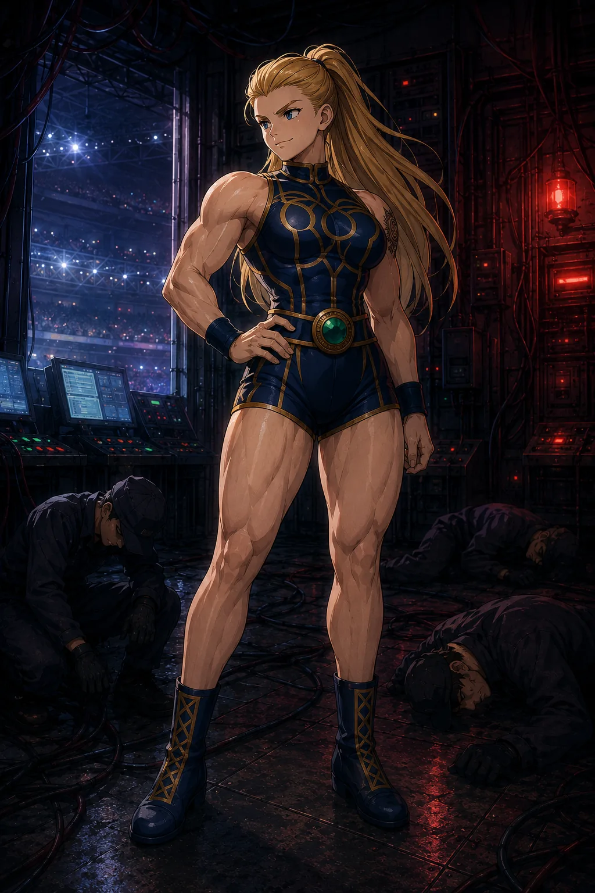

CHARACTER FILE

ヴィゴーラ・ストームハート
Vigora Stormheart
『嵐を纏いし、戦場の継承者』
基本情報
- 年齢
- 19歳
- 体格
- 176cm・均整の取れた筋肉質パワーファイター型
特性
【嵐の継承者】傷を負うほど闘志が燃え上がり、内に眠る力が段階的に解き放たれていく特性。打たれてなお前に出るたびに攻撃力・耐久力・機動力が研ぎ澄まされ、ヴィゴーラはまるで嵐そのもののように勢いを増していく。
超必殺技
【ストームアックス（Storm Axe）】フェアコアのエネルギーを暴風雨の力へと変え、全身に荒れ狂う嵐をまとって突進。高速で体を旋回させながら豪快に腕を振り抜き、斧の一撃のような破壊力で相手を薙ぎ払う超必殺技。
性格
冷静沈着かつ誇り高き戦士。嵐のような勢いで試合を支配するカリスマ。
ファイトスタイル
ストライク×グラップル融合型。勢いと重量を併せ持つダイナミックな戦闘スタイル。
相性
- 有利な相手
- 単調なラッシュ型・守備型ファイター
- 不利な相手
- 超瞬間火力型・トリッキーなフェイント型
プロフィール
伝説のヴァイキング戦士「ラグナル・ロズブローク」の血を引く、高貴なる戦士──ヴィゴーラ・ストームハート。その鍛錬は常に極限。吹雪の雪山に篭り、嵐の海に小舟で挑み、飢えと孤独の中で己を磨いてきた。欲しいものは略奪し、恐れを知らぬ勇気で突き進む、まさに“戦の申し子”。 だが、彼女の強さは本能だけではない。リングの中では冷徹な戦略家としての顔を覗かせる。相手の動き、展開、心理を頭の中で何度も“敗北”しながら反復し、リアルにシミュレート。まるで要塞を落とすかのように、綿密な「攻城戦」として試合を構築していく。 本能と知略──その両輪が揃った時、ヴィゴーラ・ストームハートは“嵐を超える存在”となる。
口癖
「ここ（頭）を使うんだよ！」